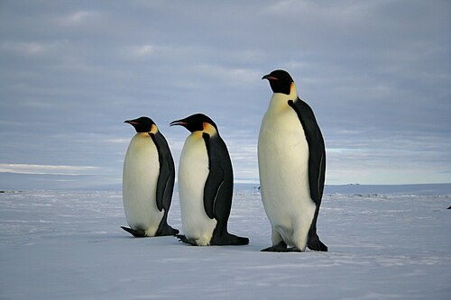
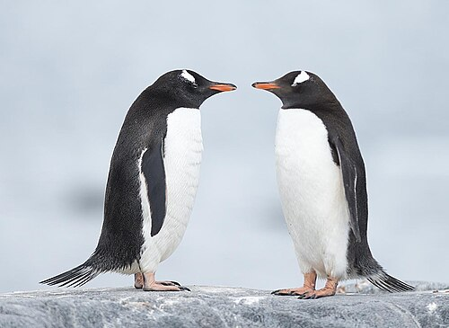
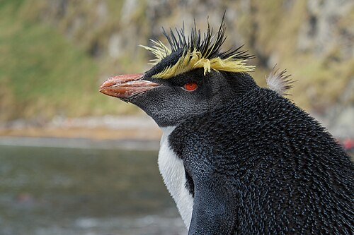
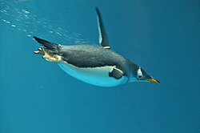

Pingviner

Kejsarpingvin (Aptenodytes forsteri) är den största och tyngsta nu levande pingvinarten och är endemisk för Antarktis. Hanen och honan är lika såväl till fjäderdräkt som storlek, vilken uppgår till cirka 120 centimeter. De väger i genomsnitt mellan 22 och 37 kg. Ryggdelarna är svarta och skarpt avgränsade från den vita buken, det blekgula bröstet och de bjärt gula öronfläckarna. Liksom alla pingviner saknar den flygförmåga, har en strömlinjeformad kropp och vingarna är stela och tillplattade till fenor för ett liv i havet.
Källa: Wikipedia (Kejsarpingvin)

Åsnepingvin (Pygoscelis papua) är en upp till 80 centimeter hög pingvinart som lever i Antarktis och på subantarktiska öar. Hanarna väger som mest omkring 8 kg och ner mot 5,5 kg strax före parningstid. Honorna väger som mest omkring 7,5 kg och går ner till under 5 kg när de vaktar ungarna i boet.
Källa: Wikipedia (Åsnepingviner)

Nordlig klipphopparpingvin (Eudyptes moseleyi) är en starkt hotad art av pingviner och en av de arter som lever längst norrut. Nordlig klipphopparpingvin är en 55 centimeter lång pingvin med röda ögon, vit undersida och skiffergrå ovansida. Den har karakteristiska mycket långa och starkt gula ögonbryn som slutar i långa gula plymer bakom ögonen. Ovansidan av huvudet har spetsiga svarta fjädrar. De närbesläktade arterna västlig klipphopparpingvin och östlig klipphopparpingvin har bredare ögonbryn och ännu längre plymer.

Pingviner (Spheniscidae) är den enda familjen inom ordningen pingvinfåglar (Sphenisciformes) och omfattar en grupp flygoförmögna havsfåglar. De förekommer nästan enbart på södra halvklotet – bara galápagospingvinen förekommer norr om ekvatorn. Pingviner är väl anpassade för ett liv i havet med motskuggad fjäderdräkt i svart och vitt och med tillbakabildade vingar som används som simfenor. De flesta arter lever av krill, fisk, bläckfisk och liknande som de fångar under sina dyk. De tillbringar drygt hälften av sina liv på land och övrig tid i havet.
Familjen omfattar sex släkten, sjutton arter och ett antal underarter. Även om nästan alla pingviner lever på södra halvklotet så återfinns bara ett fåtal i riktigt kallt klimat, så långt söderut som Antarktis. Många arter förekommer i den tempererade zonen, och en art i tropiskt klimat vid ekvatorn.
Den största idag förekommande arten inom familjen är kejsarpingvinen (Aptenodytes forsteri) som i genomsnitt som vuxen mäter 1,1 meter och väger ungefär 35 kg. Den minsta arten är dvärgpingvin (Eudyptula minor), som mäter ungefär 40 cm och bara väger runt ett kilogram. De större arterna förekommer främst i kallare klimat medan de mindre förekommer i varmare. Vissa förhistoriska arter var riktiga jättar. Den största kända arten från fossil är Anthropornis nordenskjoeldi som mätte dryga 165 centimeter och levde för cirka 40 miljoner år sedan.
Källa: Wikipedia (Pingviner)